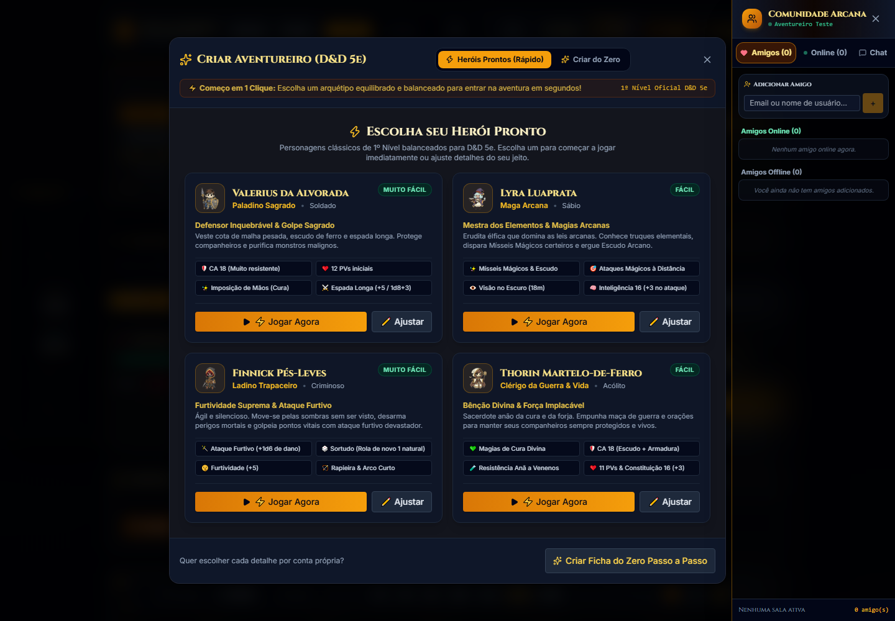
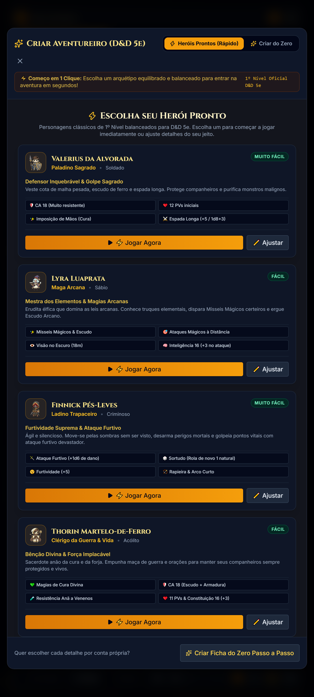

ARCANASHEET
Aprenda a criar seu primeiro herói, fazer testes, jogar com seu grupo e usar o tabuleiro virtual — mesmo que esta seja sua primeira aventura de RPG.
Ficha digital Dados Mesa online Mestre de IA
Bem-vindo à aventura
ArcanaSheet reúne sua ficha de personagem, rolagens de dados e ferramentas para jogar com outras pessoas. Você não precisa conhecer todas as regras para começar: diga o que seu herói tenta fazer, e o Mestre conduz a cena.
O Mestre descreve uma situação. Você diz o que seu personagem faz. Quando o resultado for incerto, o grupo rola dados. O resultado muda a história — inclusive quando algo não sai como planejado.
Comece em cinco passos
- Entre ou crie sua conta. Use a tela inicial do ArcanaSheet. Guarde sua senha e não compartilhe sua chave de IA.
- Abra a aba Ficha. Escolha Heróis Prontos para começar rapidamente ou Criar do Zero para escolher os detalhes.
- Leia o resumo do personagem. Confira classe, nível, pontos de vida, defesa e ataques antes da primeira cena.
- Entre na mesa do grupo. O Mestre cria ou abre a mesa online e compartilha o código ou convite com os jogadores.
- Jogue uma ação simples. Exemplo: “Quero observar a porta antes de abrir”. Se for preciso, o Mestre pede um teste e você rola pelo cartão exibido.
Não tente decorar o livro de regras. Faça perguntas, descreva sua intenção e use a ficha para consultar os números. O grupo pode decidir junto como resolver uma situação duvidosa.
Escolha sua área
Seu personagem, atributos, equipamentos e rolagens.
Ferramentas para preparar e conduzir encontros.
Tabuleiro tático, tokens, chat e combate.
Conexão e comunicação com o grupo.
Seu primeiro personagem
Herói pronto ou criação passo a passo?
Se você ainda está aprendendo, escolha um Herói Pronto. Ele já vem com uma combinação inicial de classe e equipamento, então você pode começar a jogar e entender a ficha aos poucos. Quando quiser personalizar, crie um personagem do zero ou edite o herói existente.
O que significam os números principais?
Força, Destreza, Constituição, Inteligência, Sabedoria e Carisma. Indicam as aptidões gerais do herói.
Bônus ou penalidade derivado do atributo. É o número somado à maioria dos testes.
Bônus por treinamento. Soma-se quando o personagem é proficiente na perícia, salvaguarda ou ataque aplicável.
PV são pontos de vida. CA é Classe de Armadura: o alvo que um ataque precisa alcançar para acertar.
Como fazer um teste
- O Mestre informa o que testar — por exemplo, Furtividade — e, quando necessário, a Classe de Dificuldade (CD).
- Use o botão do teste solicitado. A ficha acrescenta os bônus cadastrados e mostra o resultado.
- Compare o total com a CD. Igualar ou superar a CD normalmente significa sucesso; abaixo dela, falha. O Mestre descreve o efeito na cena.
Vantagem e desvantagem
Com vantagem, role dois d20 e use o maior. Com desvantagem, role dois e use o menor. O Mestre informa quando uma delas se aplica; elas não se acumulam entre si.
Jogue uma rodada
Quando começa um combate
- Iniciativa: cada participante faz uma rolagem para determinar a ordem dos turnos.
- No seu turno: diga sua intenção ao Mestre. Você normalmente pode se mover e realizar uma ação; recursos especiais podem permitir outras opções.
- Ataque: role para acertar o alvo. Se acertar, role o dano indicado pela arma ou magia.
- Dano e cura: o Mestre ou o sistema atualiza os pontos de vida. Confira o valor antes de continuar.
- Fim do turno: passe a vez para o próximo combatente no rastreador.
Distância, alcance, condições, concentração, cobertura e efeitos de magia podem exigir interpretação. Confirme o resultado com o Mestre, especialmente quando a automação não reconhecer a ação ou o alvo.
Ficha, recursos e descanso
- Use a ficha para consultar PV, CA, ataques, perícias, equipamentos e recursos de classe.
- Um descanso curto ou longo só deve ser aplicado quando a situação da aventura permitir. O Mestre define quando o grupo pode descansar.
- Confira os recursos depois do descanso: algumas habilidades voltam em descanso curto, outras em descanso longo ou conforme as regras da classe.
- Subir de nível não é apenas aumentar um número: pode liberar habilidades, magias, pontos de vida e escolhas novas. Revise a ficha depois de evoluir.
Usando o mapa
- O Mestre carrega o cenário e posiciona tokens. Selecione o token para ver as ações disponíveis.
- Use o zoom para aproximar e afastar. No computador, arraste o mapa para mover a câmera; controles de toque podem variar conforme o aparelho.
- Use a régua e os modelos de área como auxílio visual. O Mestre confirma alcance, movimento e quem foi afetado.
- No celular, os atalhos de dados e ações abrem painéis flutuantes. Feche-os para liberar a área de jogo.
Entre em uma mesa online
Para quem está jogando
- Abra Mesa Online ou o convite enviado pelo Mestre.
- Entre com o código da campanha ou aceite o convite recebido.
- Escolha a ficha correta e confira nome, PV e CA antes de começar.
- Mantenha a página aberta durante a sessão e avise o grupo se perder a conexão.
Para quem está mestrando
- Abra a área Mestre e prepare a campanha, o encontro e os personagens necessários.
- Crie ou abra uma mesa online e compartilhe o código ou convite somente com os jogadores.
- Abra Mapa (VTT) para carregar o cenário, posicionar participantes e acompanhar o combate.
- Use o rastreador para iniciar o combate e avançar a vez na ordem de iniciativa.
- Confirme se todos entraram na campanha certa antes de compartilhar handouts ou informações privadas.
Convites, chat e privacidade
Use o chat público para informações compartilhadas e mensagens privadas para segredos de personagem. Não publique códigos de campanha em locais abertos. Nunca envie senha, chave de API ou dados pessoais no chat da mesa.
Como usar o Mestre de IA
O Mestre de IA pode narrar cenas, interpretar personagens, sugerir caminhos e conduzir uma aventura solo ou apoiar uma mesa. Ele é uma ferramenta de apoio: pode esquecer fatos, interpretar uma regra incorretamente ou propor algo que não combina com a campanha.
Configuração inicial
- Abra o Mestre de IA e vá às configurações.
- Escolha um provedor disponível. Alguns exigem uma chave de API própria; o modo sem chave depende da disponibilidade do serviço externo.
- Se usar uma chave, copie-a somente do site oficial do provedor e guarde-a em local seguro. Não a compartilhe com o grupo.
- Selecione o tom da aventura e informe instruções simples: tema, limites, ritmo, personagens e o tipo de desafio desejado.
- Comece com uma premissa ou descreva a primeira ação do personagem.
Verifique as condições do provedor escolhido. Mensagens enviadas à IA podem ser processadas por esse serviço. Uma chave de API pode gerar cobranças ou consumir limites da sua conta; consulte o painel do próprio provedor.
Como conversar com a IA
“Examino a fechadura procurando armadilhas antes de abrir.”
“Que teste devo fazer e qual bônus da minha ficha se aplica?”
“Meu personagem já gastou essa magia; não a use novamente.”
“Faça uma pausa para eu decidir antes de avançar a cena.”
Rolagens e decisões
Quando a IA solicitar um teste, confira o nome do teste, o alvo e o bônus. Faça a rolagem pelo cartão. Em combate, confirme acerto, dano e alvo no histórico da mesa. O app automatiza algumas ações, mas não cobre todas as regras de D&D.
Problemas comuns e glossário
Não consigo entrar
Confira e-mail, senha e conexão. Use “esqueci minha senha” se necessário. Não compartilhe sua senha para pedir ajuda.
A ficha não aparece
Confirme a conta usada e a campanha selecionada. Aguarde a sincronização antes de atualizar a página.
A IA não responde
Confira o provedor escolhido, a chave, o limite de uso e a conexão. Serviços externos podem ficar indisponíveis.
O mapa não responde bem no celular
Feche painéis flutuantes, gire o aparelho para paisagem ou use um computador para controlar o tabuleiro com mais precisão.
Uma rolagem parece errada
Confira atributo, proficiência, arma e vantagem/desvantagem. Peça ao Mestre para revisar o resultado antes de aplicar dano.
Perdi a conexão
Avise o grupo por outro canal. Ao retornar, confirme com o Mestre quais mudanças aconteceram enquanto você estava fora.
Glossário rápido
- CD: Classe de Dificuldade, o número que um teste precisa alcançar.
- d20: dado de vinte faces, usado para muitos testes, ataques e salvaguardas.
- PV: pontos de vida. Ao chegar a zero, consulte o Mestre sobre as regras de inconsciência e morte.
- CA: Classe de Armadura, valor usado para verificar se um ataque acerta.
- VTT: tabuleiro virtual para mapa, tokens e combate.
- Token: marcador que representa personagem, criatura ou objeto no mapa.
- Proficiência: treinamento que acrescenta bônus em testes específicos.
Comece com um herói pronto, uma cena curta e um único objetivo. Depois da primeira sessão, personalize a ficha e explore o mapa, o bestiário e as ferramentas do Mestre.
Este guia explica os fluxos gerais da versão atual do ArcanaSheet. A interface pode mudar com futuras atualizações. Para dúvidas sobre a aventura, confirme sempre com o Mestre da mesa.
ArcanaSheet · arcanasheet.sociedade.online
Guia visual: escolher um herói
Os números e as setas mostram o caminho mais rápido para começar. A tela pode mudar um pouco conforme o tamanho do aparelho.

1234- Deixe selecionado Heróis Prontos para começar rápido.
- Leia a classe, a defesa e os pontos de vida do personagem.
- Toque em Jogar Agora para usar o herói como está; escolha Ajustar para personalizar.
- Se preferir montar tudo, use Criar Ficha do Zero Passo a Passo.

Depois de escolher
Confira o nome, a classe e os PV na ficha. O tutorial do aplicativo também pode guiar você por um teste, pela mesa online e pelo início de um combate.
Para ampliar a captura, abra este PDF com zoom ou consulte o manual digital em HTML.